《C++ Primer》 13-16章笔记
第13章 拷贝控制
拷贝构造函数、移动构造函数负责定义用同类型的另一个对象初始化本对象时做什么
拷贝赋值运算符、移动赋值运算符定义将同类型的另一个对象赋予同类型对象时做什么
析构函数定义了此类型对象销毁时做什么
拷贝、赋值与销毁
拷贝构造函数
构造函数+第一个参数是自身类类型的引用+任何额外参数都有默认值
拷贝函数在几种情况下都会被隐式的使用，因此拷贝函数不应该是explicit的
一般情况下，合成构造函数会将给定对象中每个非static参数成员逐个拷贝到正在创建的对象中。对类类型成员会使用其拷贝构造函数来拷贝；对内置类型成员则直接拷贝
拷贝初始化发生的情况：
- 用=定义变量时会发生
- 将一个对象作为实参传递给一个非引用类型的形参
- 从一个返回类型为非引用类型的函数返回一个对象
- 用花括号列表初始化一个数组中的元素或一个聚合类中的成员
- 标准库容器初始化或是调用其insert或push成员
拷贝赋值运算符
赋值运算符通常应该返回一个指向其左侧运算对象的引用
将右侧对象中每个非static成员赋予左侧运算对象的对应成员
析构函数
释放对象使用的资源，销毁对象的非static数据成员
不能重载，每个类只有一个
析构函数首先执行函数体，然后销毁成员，按初始化顺序逆序销毁
销毁类类型的成员需要执行成员自己的析构函数，内置类型没有析构函数，因此销毁内置类型成员什么也不需要做。智能指针是类类型，具有析构函数，智能指针在析构阶段自动销毁
什么时候调用析构函数：
- 变量离开其作用域时被销毁
- 当一个对象被销毁时，其成员被销毁
- 容器被销毁时，其中元素被销毁
- 动态分配的对象，对指向它的指针应用delete运算符被销毁时
- 对于临时对象，当创建它的完整表达式结束时被销毁
三/五法则
如果一个类需要自定义析构函数，几乎可以肯定它也需要自定义拷贝构造函数和拷贝赋值运算符
需要拷贝操作的类也需要赋值操作，反之亦然
使用=default
在类内修饰成员声明时，会隐式的声明为内联的；如果不希望内联，应该仅在类外定义使用=default
阻止拷贝
例如，iostream类阻止了拷贝，避免多个对象写入或读取相同的IO缓冲
新标准下可以通过拷贝构造函数和拷贝赋值运算符定义为deleted function来阻止拷贝
1 | struct NoCopy{ |
- =delete必须出现在函数第一次声明的时候
- 可以对任何函数指定=delete，而只能对编译器可以合成的默认构造函数或拷贝控制成员使用=default
- 析构函数不能是deleted function,否则，不能定义该类型的变量，也不能释放指向该类型动态分配对象的指针
- 合成的拷贝控制成员可能是deleted,如果一个类有数据成员不能默认构造、拷贝、复制或销毁，则对应的成员函数将被定义为deleted function
拷贝控制和资源管理
行为像值的类：拷贝构造和拷贝赋值时对内部成员进行拷贝
行为像指针的类：拷贝构造拷贝赋值中使用shared_ptr的引用计数管理资源
交换操作
动态内存管理类
move函数，在utility头文件中
对象移动
移动而非拷贝对象在某些情况下会大幅提升性能
标准库容器、string和shared_ptr既支持移动也支持拷贝。IO类和unique_ptr类可以移动但不能拷贝
右值引用
回忆：左值和右值是表达式的属性，一般而言，一个左值表达式表示的是一个对象的身份，而一个右值表达式表示的是对象的值
右值引用是必须绑定到右值的引用。我们通过&&获得右值引用。
右值引用有一个重要的性质：只能绑定到一个将要销毁的对象。
常规引用（左值引用）不能将其绑定到要求转换的表达式、字面常量或者返回右值的表达式上。右值引用可以，但不能直接将右值引用直接绑定到一个左值上
1 | int i = 42; |
进一步区分左值右值：
- 返回左值引用的函数，连同赋值、下标、解引用和前置递增、前置递减运算符，返回的都是左值表达式
- 返回非引用类型的函数，连同算术、关系、位、后置递增和后置递减运算符，都生成右值。可以将const左值引用或者右值引用绑定到这类表达式上
- 左值有持久的状态，右值要么是字面常量，要么是表达式求值过程中创建的临时对象。
- 变量是左值，即便该变量是右值引用类型它也是左值
标准库move函数：
显式地将一个左值转换为对应的右值引用类型，move函数可以获得绑定到左值上的右值引用
1 | int &&rr3 = std::move(rr1); |
调用move意味着承诺除了对rr1赋值或者销毁之外，将不再使用它
使用move的代码应该使用std::move，这也可以避免潜在的名字冲突
移动构造函数和移动赋值运算符
让自己的类型支持移动操作，需要定义这两个成员
这两个成员类似对应的拷贝操作，但它们从给定对象“窃取”而非拷贝资源
移动构造函数
移动构造函数的第一个参数是该类类型的一个引用，但是是右值引用。
移动构造函数除了完成资源移动外，还必须确保移动后源对象处于销毁无害的状态
移动构造函数不分配任何新内存
移动赋值运算符
必须正确处理自赋值。
移动操作之后，移后源对象必须保持有效的、可析构的状态，但是用户不能对其值进行任何假设。
合成的移动操作
如果一个类定义了自己的拷贝构造函数、拷贝赋值运算符或者析构函数，编译器就不会为之合成移动构造函数和移动赋值运算符了。
只有当一个类没有定义任何自己版本的拷贝控制成员，且类的每个非static数据成员都可以移动时，编译器才会合成移动构造函数或移动赋值运算符。
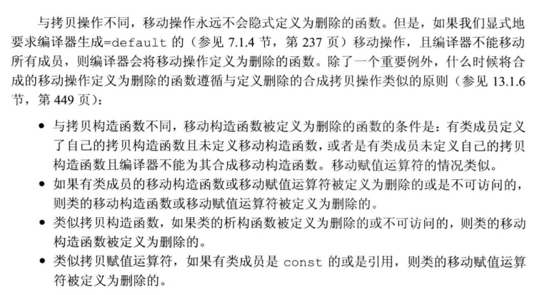
如果拷贝构造和移动构造并存，根据构造或赋值传入参数的类型，处理方式是：移动右值，拷贝左值。但如果没有移动构造函数，右值也被拷贝
移动迭代器（cpp11）
移动迭代器解引用运算符生成的是一个右值引用
标准库的make_move_iterator函数可以将一个普通迭代器转换为一个移动迭代器。
原迭代器的所有其他操作在移动迭代器中都照常工作。
需要注意的是，标准库不保证哪些算法适用移动迭代器，哪些不适用。由于移动一个对象可能销毁掉源对象，因此只有在确信算法在为一个元素赋值或者将其传递给一个用户定义的函数后不再访问它时，才能将移动迭代器传递给算法
右值引用和成员函数
1 | void push_back(const X&); |
可以强制指出this指向的对象（左侧运算对象）的属性是左值或者右值，使用引用限定符&或&&，位置在参数列表后放置
const限定和引用限定同时使用时，const限定必须在前
1 | class F{ |
如果一个成员函数有引用限定符，则具有相同参数列表的所有版本都必须有引用限定符
第14章 重载运算与类型转换
基本概念
operator+要定义的运算符号
重载运算符函数的参数数量和运算符作用的运算对象数量一样多
除了operator()之外，其他重载运算符不能含有默认实参
如果一个运算符函数是成员函数，第一个运算对象绑定到隐式的this指针上，所以此时参数数量=运算符作用的运算对象-1
不能重定义内置类型的运算含义
重载运算符作为成员还是非成员函数的选择：
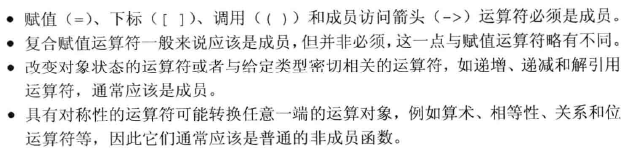
对于最后一条：如果重载被定义为类成员函数，那么左侧运算对象一定是所属类的一个对象。所以如果要使运算符有对称性，不应该定义为成员函数
比如string s = “hi” + s;是非法的，因为operator +被定义为string的类成员函数，该语句等价于“hi”.operator+(s);，而其类型为const char*，根本就无法调用。
输入和输出运算符
1 | ostream& operator<<(ostream& os,const X& x); |
第一个参数是非常量ostream对象的引用：非常量->向流写入内容会改变其状态；引用->流不允许拷贝。
输出运算符重载时尽量减少格式化操作，专注于输出对象的内容。使用户有权控制输出细节。
1 | istream& operator>>(istream& is,X& x); |
输入运算符必须处理可能的输入失败的情况，而输出运算符不需要
输入时可能发生下列错误：
- 流含有错误类型的数据读取操作时（输入和被赋值变量类型不匹配）
- 读取操作到达文件末尾或者遇到输入流的其他错误
输入运算符负责检测错误，同时从错误中恢复
算术和关系运算符
一般定义为非成员函数以允许对左侧或右侧对象进行转换
1 | X operator+(const X& lhs,const X& rhs); |
如果类同时定义了算术运算符和相关的复合赋值运算符，则通常情况下应该使用复合赋值来实现算术运算符:
1 | X& operator+=(const X& rhs); |
1 | bool operator==(const X& lhs,const X& rhs); |
相等运算符和不等运算符在实现中应该把具体工作委托给另外一个，而其只负责调用对方实现自身的功能。
对于关系运算符，如<，如果存在唯一一种逻辑可靠的<定义，则应该考虑重载该运算符
如果类同时还包含==，则当且仅当<定义和==产生的结果一致时才定义<运算符
赋值运算符
1 | X& X::operator=(initializer_list<string> il); |
注意赋值运算符改变了左侧运算对象本身，按照之前的准则，应该定义为类成员函数，且返回左侧对象的引用。形参类型可以按照需求进行定义
复合赋值运算符也要返回左侧对象的引用。
下标运算符
1 | string& operator[](size_t n); |
下标运算符必须是成员函数
如果一个类包含下标运算符，则通常会定义两个版本：一个返回普通引用，一个是类的常量成员并且返回常量引用
递增和递减运算符
建议设定为成员函数，要同时定义前置版本和后置版本
前置版本
1 | X& operator++(); |
后置版本
为了区分前置盒后置版本，在后置重载的生命中增加一个额外的int形参，但该形参不会被使用。调用后置运算符时，编译器会为这个形参提供一个值为0的实参
1 | X X::operator++(int){ |
后置版本的实现可以调用前置版本来完成实际工作
因为内置的后置递增递减运算符返回的时对象运算之前的值，所以后置版本的重载返回类型设置为值类型。
成员访问运算符
箭头运算符完成的是解引用+成员访问
箭头运算符必须是类的成员，解引用运算符不必须是类的成员，但一般也设置为类的成员。
成员访问一般不会改变对象状态，所以重载函数定义为const成员，
1 | string& operator*() const; |
重载的箭头运算符必须返回类的指针或者自定义了箭头运算符的某个类的对象
函数调用运算符
如果类重载了函数调用运算符，则可以像使用函数一样使用该类的对象
1 | struct absInt{ |
如果类定义了调用运算符，则该类的对象称作函数对象
函数对象类中的包含的其他数据数据成员可以被用于定制调用运算符中的操作（比如定义一个打印字符串类，重载operator()，数据成员中有分隔符可以使用）
函数对象常常作为泛型算法的实参
lambda是函数对象
编写一个lambda后，编译器将表达式翻译为一个未命名类的对象，该类中含有一个重载的函数调用运算符。在默认情况下，该类的函数调用运算符是一个const成员函数
如果lambda的捕获变量为值捕获，这种类必须为每个值捕获的变量建立对应的数据成员，同时创建构造函数并初始化数据成员
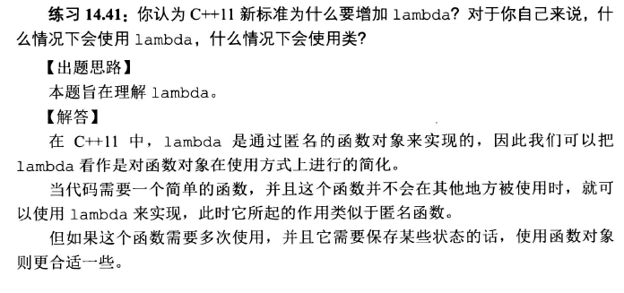
标准库定义的函数对象
标准库定义了一组表示算术运算符、关系运算符和逻辑运算符的类，在functional头文件中
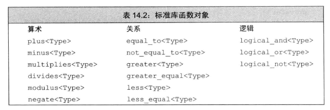
1 | plus<int> intAdd; |
标准库规定其函数对象对于指针也同样适用。
可调用对象与function
C++中可调用的对象：函数、函数指针、lambda表达式、bind创建的对象、重载了函数调用运算符的类。
调用形式（call signature）指明返回类型以及传递给调用的实参类型，一种调用形式对应一个函数类型。不同类型可能具有相同的调用形式
下面几个可调用对象共用一种调用形式
1 | //int(int,int) |
function定义于functional头文件中，是一个模板，当创建一个具体的function类型时我们必须提供额外的信息，该信息表示对象的调用形式
1 | function<int(int,int)>; |
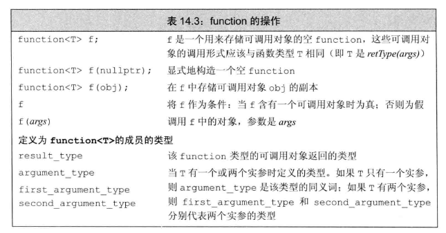
1 | function<int(int,int)> f1 = add; |
重载的函数与function
不能直接将重载函数的名字存入function类型的对象中，会产生二义性问题
解决方法：存储函数指针、使用lambda消除二义性
重载、类型转换与运算符
类型转换运算符
负责将一个类类型的值转换成其他类型
1 | operator type() const;//一般形式，type指某种类型 |
- 可以面向除void之外的任意类型进行定义，只要该类型能作为函数的返回类型
- 不允许转换成数组或者函数类型
- 允许转换为指针或者引用类型
- 没有显式的返回类型，没有形参
- 必须定义为类的成员函数
显式的类型转换运算符——explicit
声明为explicit之后，只能通过显式的请求进行类型转换
1 | SmallInt si = 3; |
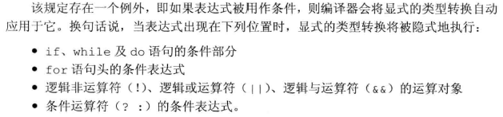
避免含有二义性的类型转换
如果类中包含一个或多个类型转换，必须确保在类类型和目标类型之间只存在唯一一种转换方式。
考虑以下情况：
A类中包含以B类为参数的转换构造函数，B类中存在转换成A类型的类型转换运算符。如果有以下语句
1 | B b; |
则会产生二义性，因为不知道应该使用哪种方式将B类型的b转换为A类型
如果确实想执行该调用，就必须显式指明调用的类型转换方式
1 | A a1 = f(b.operator A()); |
无法使用强制类型转换来解决二义性
再考虑以下情况，类中定义的一组类型转换，其转换源或转换目标类型本身可以通过其他类型转换联系在一起
1 | struct A{ |
根本原因是上述调用中所需要的标准类型转换级别一致
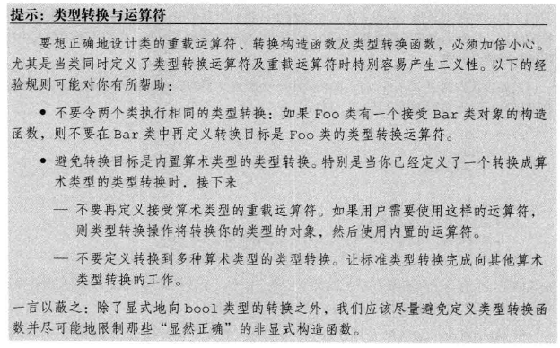
重载函数与转换构造函数
再考虑以下情况，二义性问题会进一步加重
1 | struct C{ |
在传入实参时显式地构造类型可以消除二义性，但出现这种情况通常表示程序设计存在问题。
函数匹配与重载运算符
- 表达式中运算符的候选函数集既包括成员函数，也包括非成员函数
- 如果对同一个类既提供了转换目标是算术类型的类型转换，也提供了重载运算符，会产生二义性问题
第15章 面向对象程序设计
OOP概述
核心思想：数据抽象、继承和动态绑定
数据抽象：将类接口和实现分离
继承：定义相似的类型并对其相似关系建模
动态绑定：一定程度上忽略相似类型的区别，以统一的方式使用其对象
基类、派生类
基类负责定义在层次关系中所有类共有的成员。每个派生类定义各自特有的成员
对于某些函数，基类希望其派生类各自定义适合自身的版本，此时基类将这些函数声明为虚函数。派生类必须在其内部对所有重新定义的虚函数进行声明
动态绑定
函数的运行版本由实参决定，即在运行时选择函数的版本
在CPP中，当我们使用基类的引用或指针调用一个虚函数时将发生动态绑定
定义基类和派生类
基类通常都应该定义一个虚析构函数，即使该函数不执行任何实际操作
基本知识
成员函数与继承
基类的成员函数可以被分为两种：
- 希望派生类进行**覆盖（override）**的函数
- 希望派生类直接继承而不改变的函数
对于前者，基类通常将其定义为虚函数。当使用指针或者引用调用虚函数时，该调用将被动态绑定。根据指针或引用所绑定的对象类型不同，调用基类的版本或者派生类的版本
虚函数声明：virtual关键字，只能出现在类内部的声明语句而不能用于外部的函数定义
虚函数范围：任何构造函数之外的非静态函数都可以是虚函数
非虚函数的解析过程发生在编译时而非运行时
派生类的声明形式
使用类派生列表明确指出从哪个类继承而来
声明时不能包含派生列表
1 | class Bulk_quote;//声明 |
派生类中的虚函数
如果派生类没有覆盖基类中某个虚函数，则该虚函数的行为类似于其他的普通成员。派生类会直接继承其在基类中的版本
派生类可以在覆盖的函数前使用virtual关键字，但不是必须
也可以在形参列表后边添加override关键字，override的次序在const后面或引用限定符&、&&后面
派生类对象及派生类向基类的类型转换
编译器隐式执行派生类到基类的转换
1 | Quote item; |
能够进行转换的原因是每个派生类对象都包含一个基类部分，而基类的引用或指针可以绑定到该部分上。所以不存在基类向派生类的自动类型转换。
判断基类和派生类转换是否可行看的是被转换对象静态类型，因为编译器只能检查静态类型来推断转换是否合法。dynamic_cast请求类型转换的安全检查将在运行时执行。static_cast的转换可以强制覆盖掉编译器的检查工作。使用时要确保转换是安全的。
注意，派生类向基类之间的自动类型转换只对指针或引用类型有效。对于对象之间的转换，其实是调用了构造函数或者赋值运算符，一个对象作为参数传入，在该过程中发生了类型转换。
派生类构造函数
对于从基类中继承而来的成员，派生类必须使用基类的构造函数来初始化，即每个类控制它自己的成员初始化过程。
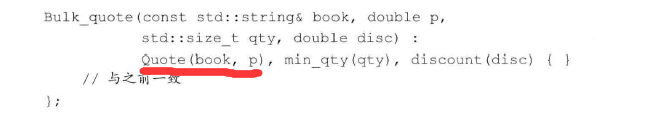
初始化顺序：初始化基类部分，按照声明顺序依次初始化派生类成员
派生类使用基类成员
可以访问基类的公有成员和受保护成员
继承与静态成员
如果基类定义了一个静态成员，则在整个继承体系中只存在该成员的唯一定义。不论从基类中派生出多少派生类。
静态成员也遵循访问控制规则，即如果在基类中是private的，则派生类无权访问
1 | class Base{ |
被用作基类的类
如果某个类被用作基类，则该类必须已经定义而非仅仅声明
直接基类、间接基类
防止继承的发生
C++11新标准，在类名后跟一个关键字final
类型转换与继承
之前提到，可以将基类的指针（包括智能指针）或引用绑定到派生类对象上，说明当使用基类指针时，实际上所绑定对象的真实类型可能是基类类型，也可能是派生类类型
静态类型与动态类型
静态类型：编译时已知，是在变量声明时的类型或表达式生成的类型
动态类型：运行时可知，是变量或表达式表示的内存中对象的类型
如果表达式既不是指针也不是引用，则动态类型和静态类型永远一致。
虚函数
总结：
这一节内容比较琐碎，可以大致分为三个：
- 虚函数在基类中的定义，需要virtual关键字，含义为想要子类去覆盖的函数
- 虚函数的通过指针或者引用的调用在运行时才会被解析，由此产生了本节中的默认实参或回避虚函数机制等小知识点
- 虚函数在派生类在的定义形式
其中最重要的是第二点，动态绑定
虚函数的调用在运行时才被解析
由于虚函数在运行时才能确定调用了哪个版本，所以所有虚函数都必须有定义。
动态绑定只有当通过指针或者引用调用虚函数时才会发生，如果使用普通类型的表达式调用虚函数时，编译时就会确定实际调用的版本。
派生类中的虚函数
- 不是必须加virtual关键字
- 如果在派生类中覆盖继承过来的虚函数，需要保持形参类型的完全一致
- 返回类型也必须匹配，除了一个例外情况：返回类型是类本身的引用或指针时
final和override说明符
override关键字说明派生类中的虚函数，好处是使得程序员的意图更加清晰（说明这个函数是虚函数的覆盖，而不是重载的新函数），并且让编译器可以发现一些错误
1 | struct B{ |
final关键字作用是禁止后续任何尝试覆盖该函数的操作
1 | struct D2 : B{ |
override和final说明符出现在形参列表和尾置返回类型之后
虚函数与默认实参
默认实参的判定是根据实际运行的函数版本中的默认实参来判定的。
如果虚函数使用默认实参，则基类与派生类中定义的默认实参最好一致。
回避虚函数的机制
某些情况下，希望对虚函数的调用不进行动态绑定，而是强迫其执行虚函数的某个特定版本
方法：使用作用域运算符
1 | double undiscounted = baseP->Quote::net_price(42); |
通常情况下，只有成员函数或友元中的代码才需要使用作用域运算符来回避虚函数的机制
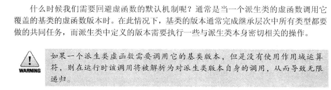
抽象基类
纯虚函数
引入目的：
1、为了方便使用多态特性，我们常常需要在基类中定义虚拟函数。
2、在很多情况下，基类本身生成对象是不合情理的。例如，动物作为一个基类可以派生出老虎、孔雀等子类，但动物本身生成对象明显不合常理。
纯虚函数实际上告诉用户（程序员）当前函数是没有实际意义的，并且告诉子类的设计者，“你必须提供一个纯虚函数的实现，但我不知道你会怎样实现它”。
纯虚函数无须定义，在函数声明语句最后加=0即可说明该函数为纯虚函数
=0只能出现在类内部的虚函数声明语句处
虚函数和纯虚函数
定义一个函数为虚函数，不代表函数为不被实现的函数。
定义他为虚函数是为了允许用基类的指针来调用子类的这个函数。
定义一个函数为纯虚函数，才代表函数没有被实现（虽然纯虚函数也可以被定义，但从从目的上分析就是没有实现）。
定义纯虚函数是为了实现一个接口，起到一个规范的作用，规范继承这个类的程序员必须实现这个函数。
抽象基类
含有（或者未经覆盖直接继承）纯虚函数的类是抽象基类
抽象基类负责定义接口，后续其他类可以覆盖接口
不能直接创建一个抽象基类的对象
值得注意的是。可以为纯虚函数提供定义，但函数体必须定义在类的外部。
访问控制和继承
protected
- 对用户而言不可访问
- 对派生类成员和友元来说可访问
- 派生类的成员或友元只能通过派生类对象来访问基类的受保护成员，派生类对象对基类对象中的受保护成员没有任何访问特权
对于最后一条，考虑如下例子
1 | class B{ |
继承来的成员访问权限的影响来自两方面：1.成员在基类中的访问说明符 2.在派生类的派生列表中的访问说明符
派生访问说明符对派生类的成员和友元能否访问其直接基类的成员没什么影响，其目的是控制派生类用户（使用者和派生类的派生类）对基类成员的访问权限
| 原本访问权限\继承方式 | public继承方式 | protected继承方式 | private继承方式 |
|---|---|---|---|
| public | public | protected | private |
| protected | protected | protected | private |
| private | 不可用 | 不可用 | 不可用 |
上表中，比如原本在基类中为public成员，派生类通过private继承后，在派生类中的访问权限变为private，在非成员函数调用时或者进一步派生时变得不可访问
派生类向基类转换的可访问性
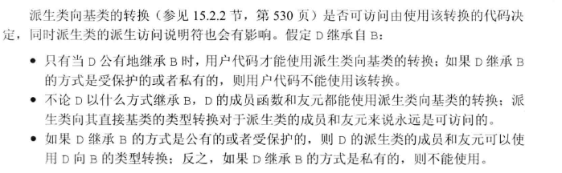
友元与继承
友元关系不能继承，每个类负责控制各自成员的访问权限
A类的友元不能访问A类派生类的private成员，但是可以访问派生类的基类部分（即派生类中基类部分由基类本身控制）；A类友元的派生类也不能访问A类的private成员。
改变个别成员的可访问性
1 | class B{ |
本来size和n是D的私有成员，然而现在使用using语句改变了这些成员的可访问性
派生类只能为那些它可以访问的名字提供using声明
默认的继承保护级别
struct默认public继承，class默认private继承
继承中的类作用域
编译时的名字查找
即使动态类型和静态类型可能不一致，但能使用哪些成员仍然是由静态类型决定的
继承中的名字冲突
派生类的成员将隐藏同名的基类成员
可以使用作用域运算符来使用隐藏的成员
除了覆盖继承而来的虚函数之外，最好不要在派生类中重用其他定义在基类中的名字
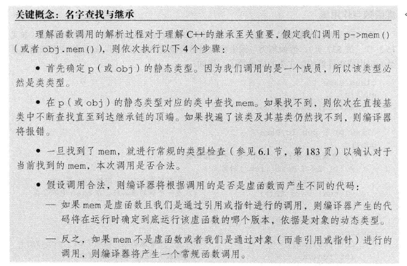
从上图可知，名字查找先于类型检查
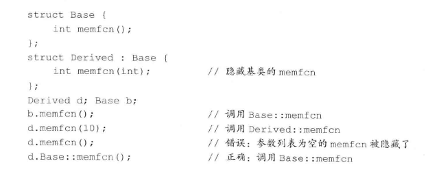
虚函数与作用域
只有基类和派生类中的虚函数有相同的形参列表，才能通过基类的指针或引用调用派生类的虚函数。
调用非虚函数时不会发生动态绑定，实际调用的函数版本又指针的静态类型决定
构造函数与拷贝控制
虚析构函数
基类通常应该定义一个虚析构函数，这样可以动态分配继承体系中的对象
基类中的析构函数是虚函数，将确保delete基类指针时运行正确的析构函数版本
如果基类的析构函数不是虚函数，则delete一个指向派生类对象的基类指针将产生未定义的行为。
派生类的拷贝控制成员
默认情况下，基类默认构造函数初始化派生类对象的基类部分，如果想拷贝（或移动）基类部分，则必须在派生类的构造函数初始值列表中显式使用基类的拷贝（或移动）构造函数
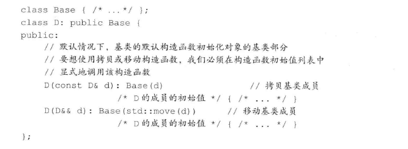
派生类的赋值运算符也必须显式地为其基类部分赋值
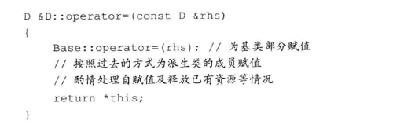
析构的顺序与构造的顺序相反，派生类的析构函数首先执行，然后是基类的析构函数
继承的构造函数
C++11新标准中，派生类能够重用其直接基类定义的构造函数
1 | class D : public B{ |
using作用域构造函数时，该语句令编译器产生代码。对基类的每个构造函数，编译器都生成一个与之对应的派生类构造函数
构造函数的using声明不会改变该构造函数的访问级别，比如基类的私有构造函数在派生类中还是私有
using声明语句也不能指定explicit或者constexpr，如果基类的构造函数是explicit或者constexpr，则继承的构造函数也有相同的属性
基类的构造函数中的默认实参不会被继承，派生类会获得多个继承的构造函数，其中每个构造函数分别省略掉一个含有默认实参的形参。
派生类不会继承构造函数的情况：
- 派生类定义的构造函数与基类构造函数有相同的参数列表
- 默认、拷贝、移动构造函数不会被继承
容器与继承
当派生类对象赋值给基类对象时，其中的派生类部分将被“切掉”，因此容器和存在继承关系的类型无法兼容
当希望在容器中存放具有继承关系的对象时，实际上存放的通常是基类的指针。这些指针所指对象的动态类型可能是基类类型，也可能是派生类类型
1 | vector<shared_ptr<B>> vec; |
第16章 模板与泛型编程
定义模板
函数模板
1 | template<typename T> |
模板定义中，模板参数列表不能为空
调用函数模板时，编译器通常用函数实参为我们推断模板实参
编译器用推断出的模板参数实例化一个特定版本的函数
模板中可以定义非类型参数，一个非类型参数表示一个值而非一个类型，通过类型名而非class或typename指定非类型参数
1 | template<unsigned N,unsigned M> |
非类型模板参数实参必须是常量表达式
inline和constexpr说明符要放在参数列表之后，返回类型之前
模板程序应该尽量减少对实参类型的要求
编译器遇到模板定义时，并不生成代码，只有当我们实例化出模板的一个特定版本时才会生成代码。
函数模板和类模板成员函数的定义通常放在头文件中，因为编译器生成一个实例化版本要掌握其定义
类模板
与函数模板的区别在于，编译器不能为类模板推断模板参数类型，必须在模板名后的尖括号中提供额外信息
默认情况下，一个类模板的成员函数只有当程序用到它时才进行实例化
在类模板的作用域内，我们可以直接使用模板名而不必指定模板实参
模板类型别名
1 | template<typename T> using twin = pair<T,T>; |
类模板中的static成员：不能把静态成员的定义放在类中，但是可以在类的外部通过使用范围解析运算符 :: 来定义静态变量从而对它进行初始化。
相同类型如int对应的类模板的对象之间的static成员是共享的，不同类型之间如int,float,char对应的类模板的对象之间的static是不共享的。
模板参数
声明中的模板参数与定义中的模板参数不必相同。
一个特定文件所需要的所有模板的声明通常一起放置在文件开始位置，出现于任何使用这些模板的代码之前。
对于模板代码而言，假定T是模板类型参数，当遇到T::mem这样的代码时，编译器不知道mem是一个类型名还是一个static数据成员的名字，直至实例化时才会知道。
1 | T::size_type * p; |
编译器不知道是size_type数据成员与p相乘还是定义一个size_type类型的p
默认情况下，C++假定通过作用域运算符访问的是名字而非类型。
所以，如果想使用一个类型时，必须显式的告诉编译器
1 | typename T::value_type top(const T&); |
C++11开始，可以为函数和类模板提供默认实参。无论何时使用类模板，模板名之后都要接尖括号，尖括号指明类必须从一个模板实例化而来。
如果希望使用提供的默认实参，就在模板名之后跟一个空的尖括号对
成员模板
类中包含的本身是模板的成员函数，这种成员被称为成员模板。成员模板不能是虚函数
控制实例化
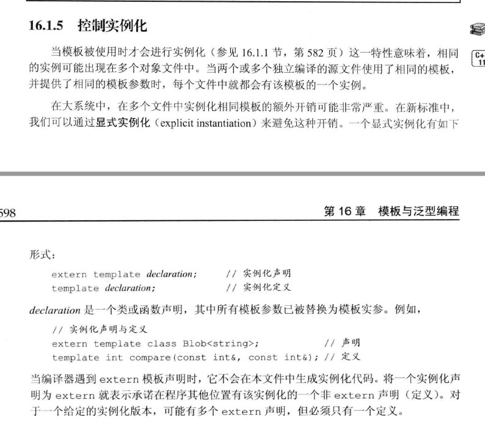
模板实参推断
类型转换与模板类型参数
对函数模板传递的实参，通常不进行类型转换，而是生成一个新的模板实例，只有有限的几种类型转换会自动应用于实参：
- 顶层const无论在形参还是实参中都会被忽略。
- 非const对象的引用或指针传递给const的引用或指针形参。
- 形参不是引用类型，则可以对数组或函数类型的实参应用指针转换，数组实参转换为指向其首元素的指针；函数实参转换为一个该函数类型的指针。
如果不是模板参数，则可以对实参进行正常的类型转换